Завдання і вправи до
розділу II
В завданнях 1-8,
задано імовірнісний розподіл випадкової величини X. Знайти математичне сподівання, дисперсію та середнє квадратичне
відхилення.
1.
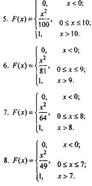
|
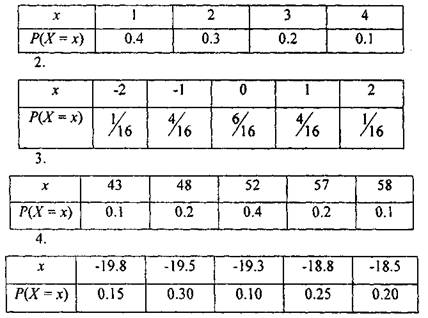
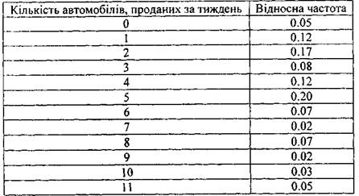
15. Відомо,
що 75% населення України має кабельне телебачення.
Яка ймовірність, що серед 18 навмання
вибраних сімей кабельне
телебачення мають
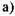
більш, ніж 1?
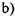
не більше 5?
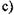
від 7 до 8 включно?
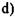
не менше 17?
16. Статистика
стверджує, що 70% населення протягом свого життя
потрапляють в різноманітні
автомобільні аварійні ситуації. Яка
ймовірність, що серед 10 людей, вибраних навмання,
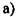
З потраплять в аварійну ситуацію?
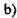
яка найвірогідніша кількість людей може потрапити в
аварійну ситуацію?
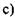
яке середнє
квадратичне відхилення для людей, що можуть
потрапити в
аварійну ситуацію?
17. Опитано 100 людей з метою виявлення
частоти аварійних
ситуацій у їх житті (див, завд.16).
Використовуючи теорему
Чебишова, визначити 75% інтервал числа осіб,
що можуть
потрапити в аварійну ситуацію. Інтерпретувати
відповідь.
18.
Щотижневик "Діловий тиждень" стверджує, що 80%
населення вважають заробітну плату державних службовців занадто
високою. Вибрано 15 осіб для створення комітету, який звичайною більшістю
голосів має вирішити питання про можливість
збільшення заробітної плати. Яка ймовірність, що голосування не приведе до збільшення заробітної плати?
На кожне із 100
питань екзаменаційного тесту є п'ять можливих відповідей. Якщо
Ви не готові до екзамену і можливі варіанти
відповідей вибираєте випадково, на який
результат Ви можете розраховувати? 20.Відомо, що 10% робітників суднобудівної галузі одержують різноманітні травми. Використовуючи Пуассонівський розподіл, знайти ймовірність, що з
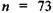
робітників п'ять одержать травми?
(0.1167)
21 .При продажі
продукції оптовими партіями у кількості 15 одиниць компанія припускає 10% дефектних одиниць. При цьому передбачається знижка у 100грн., якщо в партії виявиться більше трьох дефектних одиниць. Який сумарний обсяг знижок має передбачити компанія, якщо реалізацією продукції
займаються 50 пунктів оптових продаж? 22.
Літаки прибувають в аеропорт у середньому 5.2 за хвилину. Служба управління польотами може ефективно
працювати, якщо максимальна кількість
літаків не перевищуватиме 7 за хвилину. Яка ймовірність небезпечної роботи аеропорту?
(0.1551)
23.Щорічно подається 87 позовів до
страхових фірм. Яка ймовірність подання 5 позовів в будь-якому місяці?
(0.1167)
24.В ресторані швидкого харчування
автомобілі під'їжджають до вікна замовлень в середньому 6.2 за хвилину в годину
"пік". Менеджер хоче знати
ймовірність того, що в наступну хвилину
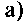
прибудуть тільки 4 автомобілі?
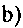
більше 4?
хоча б 4?
25.У виробничому процесі припускається 1.2 дефектних
вироби на кожні
100 одиниць продукції. Використовуючи розподіл Пуассона, визначити ймовірність того, що серед наступних 500 виробів
три будуть дефектними.
(0.0892)
26.Рада
директорів телекомпанії "Інтер" складалась із 4 економістів, З бухгалтерів та 5 інженерів. Навмання вибирається комітет із 7 членів ради. Яка ймовірність, що в нього увійдуть
2 економісти, 2 бухгалтери і 3
інженери?
(0.0895)
27.Вага коробок із кукурудзяними пластівцями є випадковою величиною, що розподілена нормально і в середньому
дорівнює 35
унцій з відхиленням у 3.4 унції.
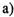
знайти
найбільшу та найменшу вагу коробки;
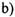
знайти
ймовірність, що вага навмання взятої коробки буде
дорівнювати від 32 до 33 унцій.
(1 унція
28.3г)
28.Більше 20 років пан Н. дістається до місця роботи автомобілем. Найшвидше
він може це зробити за 63 хвилини. Найдовша тривалість
його поїздки дорівнює 110 хвилин. Вважаючи, що час, за який пан Н. дістається до
місця роботи є випадковою величиною, що розподілена нормально, знайти
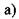
середній
час, за який пан Н. дістається до місця роботи;
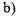
яка ймовірність, що його час на дорогу не
перевищує 1,5
години?
(86.5, 57%)
29.Нехай X -
нормально розподілена випадкова величина з математичним
сподіванням 500 та середньоквадратичним відхиленням 125. Знайти
ймовірність, що
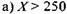
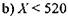
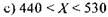
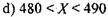
30.Середня
вартість щомісячної друкованої продукції для потреб магазину
2000(грн.) з середньоквадратичним відхиленням у 450(грн.).
Менеджер обіцяє власнику магазину знизити витрати до
1500(грн.). Вважаючи, що щомісячні витрати на друковану продукцію - нормально розподілена
випадкова величина, чи можна очікувати зниження витрат?
31.Обстеження
зросту 4000 жінок виявило, що середній зріст жінки дорівнює 64.5 дюймів із
середньоквадратичним відхиленням у 2.5 дюйми. Вважаючи, що зріст
жінки є нормально розподілена випадкова величина, знайти процент
жінок, які мають зріст від 67 дюймів і вище.
(
 2.54
см)
2.54
см)
32.Взявши
умову завдання 31, скористатись нерівністю Чебишовадля оцінки ймовірності,
що зріст жінок
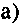
не відхилиться більш, ніж
на два середньоквадратичних відхилення від середньої величини зросту;
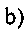
буде між 59.5 і 69.5
дюймів.
33.Випадкова
величина має математичне сподівання, що дорівнює 42 та середнє квадратичне
відхилення, що рівне 2. Використати нерівність Чебишова для оцінки ймовірності, що випадкова величина
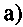
лежить
між 38 та 46
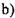
лежить між 32 та 52
34.Для випадкової
величини математичне сподівання дорівнює 50 та середнє квадратичне відхилення 1.4. Використовуючи нерівність Чебишова, знайти значення величини с, яка гарантує
96% ймовірність, що випадкова величина буде належати
інтервалу
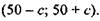